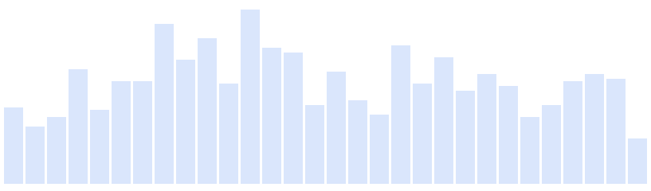

Users right now
90
Page views per minute

Top Active Pages
Users
/actualites/sp...nfants-femmes
46
/actualites/pol...-arme-politique
8
/actualites/sp...existe-femmes
3
/p/159944294/...ee-de-meurtre
3
/programmes-tele
3
REAL-TIME REPORT